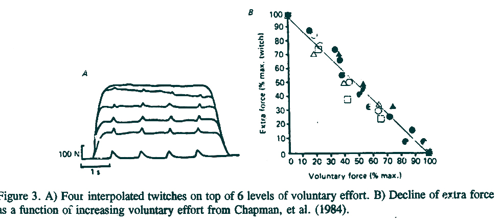
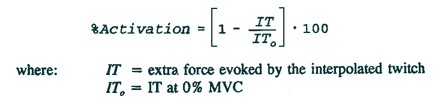
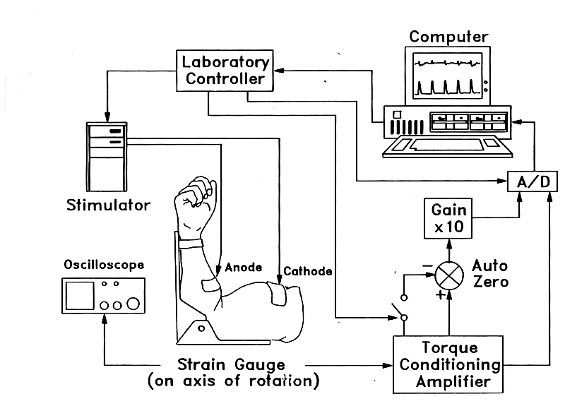
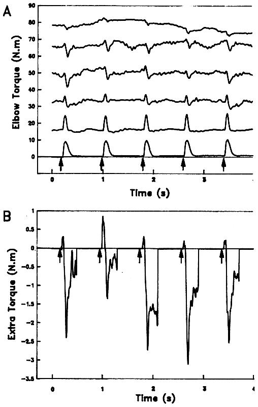
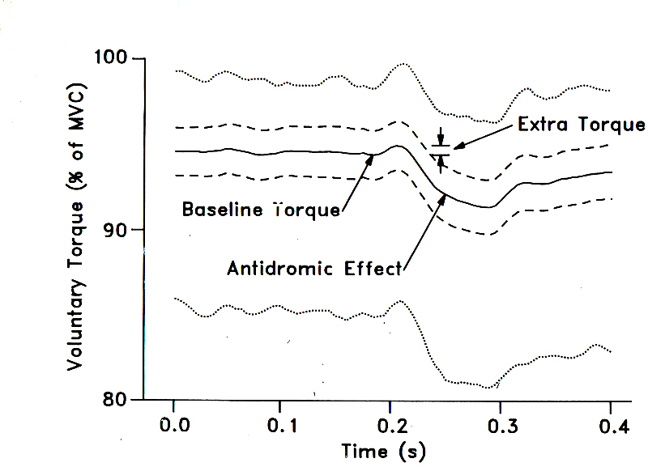
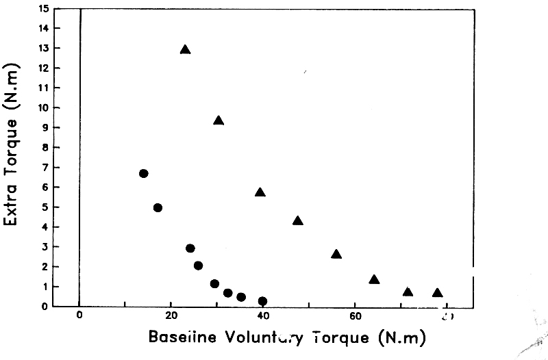
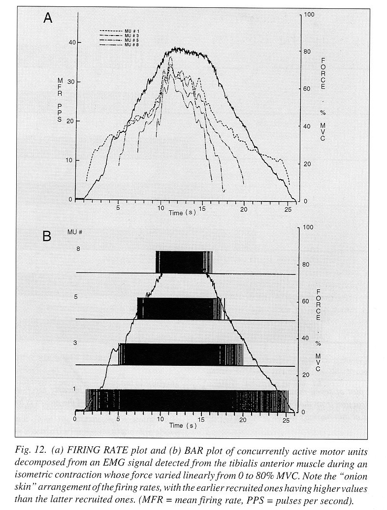
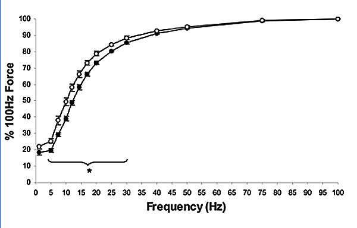

Can Humans Voluntarily Elicit Maximum Muscle Force?
In a previous lecture on exercise, we saw that strength gains are thought to be due to physiological as well as neurological factors. The assumption was that humans can learn to increase the force application of muscle in addition to the known physiological response of muscle hypertrophy. Some have claimed that most people can voluntarily activate their muscles to a maximum level. Those claiming that individuals can elicit maximum muscle force with a voluntary effort have used electrical stimulation as a proof. The technique is known as the interpolated twitch technique.
Interpolated Twitch Technique:
The graph above shows the results of four maximum twitches from electrical stimulation delivered to an isometrically contracting muscle. The data is from Chapman, et al. (1984). It can be seen (A) that the twitch evoked by the electrical stimulation is greatest when the muscle was relaxed. As the level of voluntary effort increased, the amount of force evoked by the stimulus was reduced. When the muscle was contracting at the maximum voluntary level, there is no sign of extra force evoked by the stimulation. When Chapman, et al. graphed these results (B), they found that the extra force evoked by the interpolated twitch declined linearly with increased voluntary effort. This graph led to the equation that many have used to calculate the level of voluntary effort below.
Many researchers to this day use the interpolated twitch and the above formula to determine the level of maximum effort exerted by their subjects. Indeed, many believe that this result proves that even untrained individuals are able to achieve 100% activation or very close to it.
Dowling, et al. re-examined the interpolated twitch technique and found it necessary to make modifications to improve the signal to noise ratio. We know that the extra force declines to low levels at maximum effort and that tremor increases at maximum effort. These two phenomena combine to reduce the signal (extra force) and increase the background noise (tremor). The diagram below shows the new experimental setup that improves the signal to noise ratio.
Doublet stimulation, signal magnification, and signal averaging.



Non-linear decline of extra force has been seen by others since this experiment (Behm et al.) The most important finding is the leveling off at high levels that makes extrapolation impossible. Maximum muscle force will be when extra force is zero.
Deluca's decomposition of EMG to reveal recruitment and firing rates of individual motor units during voluntary efforts.
 Hypnosis and stress
Anecdotal evidence of extreme feats of strength.